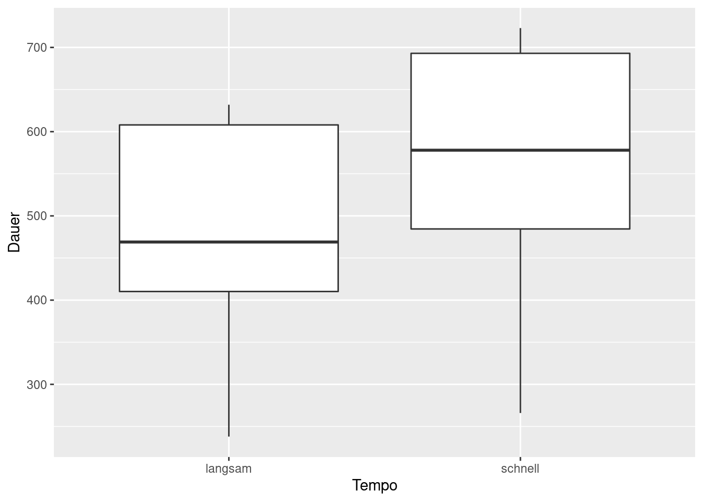

8 Daten aufräumen mit tidyr
Laden Sie die folgenden Packages und Data Frames:
library(tidyverse)## ── Attaching packages ─────────────────────────────────────── tidyverse 1.3.1 ──## ✓ ggplot2 3.3.5 ✓ purrr 0.3.4
## ✓ tibble 3.1.4 ✓ dplyr 1.0.7
## ✓ tidyr 1.1.3 ✓ stringr 1.4.0
## ✓ readr 2.0.1 ✓ forcats 0.5.1## ── Conflicts ────────────────────────────────────────── tidyverse_conflicts() ──
## x dplyr::filter() masks stats::filter()
## x dplyr::lag() masks stats::lag()library(magrittr)##
## Attaching package: 'magrittr'## The following object is masked from 'package:purrr':
##
## set_names## The following object is masked from 'package:tidyr':
##
## extractlibrary(gridExtra)##
## Attaching package: 'gridExtra'## The following object is masked from 'package:dplyr':
##
## combineurl <- "http://www.phonetik.uni-muenchen.de/~jmh/lehre/Rdf"
asp <- read.table(file.path(url, "asp.txt"))
avokal <- read.table(file.path(url, "avokal.txt"))
vcv <- read.table(file.path(url, "vcvC.txt"))“tidy datasets are all alike but every messy dataset is messy in its own way” – Hadley Wickham
Hadley Wickham ist der Chef-Entwickler des tidyverse. Die Funktionen des tidyverse sind nicht nur auf Datenmanipulation und -verarbeitung ausgerichtet, sondern auch auf das Aufräumen von Datensätzen.
Ein aufgeräumter Datensatz folgt drei Prinzipien:
- Jede Spalte enthält eine Variable
- Jede Zeile enthält eine Beobachtung
- Jede Zelle enthält einen Wert
Diese Grundsätze scheinen zunächst offensichtlich, werden Ihnen aber in der täglichen Arbeit mit Daten in R immer wieder begegnen. Die drei Prinzipien sollten Sie vor allem aus zwei Gründen befolgen: Erstens ist jeder Datensatz so auf dieselbe konsistente Weise strukturiert, was Ihnen jede Analyse erleichtern wird. Zweitens sind die Funktionen in R, aber insbesondere die Funktionen des tidyverse auf die Arbeit mit Spalten ausgelegt. Das heißt, Sie wenden Funktionen häufig auf einzelne Spalten an. Deshalb ist es sinnvoll, wenn jede Spalte eine Variable enthält. Um dies zu verdeutlichen, zeigen wir Ihnen im Folgenden Beispiele für die zwei häufigsten Arten von messy data.
- Spaltennamen sind nicht Variablen, sondern Werte: Die Spalten
schnellundlangsamim Data Frameavokalsind eigentlich Werte der VariableTempo.
avokal## schnell langsam Vpn
## 1 430 415 S1
## 2 266 238 S2
## 3 567 390 S3
## 4 531 410 S4
## 5 707 605 S5
## 6 716 609 S6
## 7 651 632 S7
## 8 589 523 S8
## 9 469 411 S9
## 10 723 612 S10- Mehrere Variablen sind in einer Spalte gespeichert: In der Spalte
Contextsind zwei Informationen abgespeichert: der linke und der rechte phonetische Kontext. Besser ist die Aufteilung in zwei Spalten, die sogar auch schon im Data Frame existieren (LeftundRight).
vcv %>% head()## RT Subject Vowel Lang Left Right Context
## 361 647.5 S209 a AE f h f.h
## 362 617.0 S209 a AE f sh f.sh
## 363 728.5 S209 a AE f sh f.sh
## 364 629.0 S209 a AE f th f.th
## 365 688.5 S209 a AE f th f.th
## 366 602.5 S209 a AE s h s.hEs ist nicht trivial, einen Data Frame sauber zu strukturieren. Nur ein Beispiel: Sie haben die ersten vier Formanten in Vokalen gemessen. Ist es sinnvoller, die erhobenen Daten in vier Spalten F1, F2, F3, F4 festzuhalten? Oder besser in zwei Spalten Hz (mit den Formantwerten in Hertz) und Formant (mit den Werten 1, 2, 3 oder 4)?
Bevor wir Ihnen zeigen, wie Sie die obigen Datensätze so umformen können, dass sie den drei Prinzipien für aufgeräumte Daten folgen, möchten wir Ihnen noch die tibble vorstellen.
8.1 Tibbles
Die tibble ist eine vereinfachte Form eines Data Frames, die im tidyverse häufig verwendet wird. Wir laden hier einen weiteren Data Frame und formen ihn danach mittels as_tibble() um:
vdata <- read.table(file.path(url, "vdata.txt")) %>%
as_tibble()Wenn wir den Namen der tibble jetzt in die Konsole eingeben, wird nicht wie beim Data Frame üblich der gesamte Datensatz angezeigt, sondern nur die ersten zehn Zeilen. Wir sehen außerdem, aus wie vielen Zeilen und Spalten die tibble besteht und welcher Objektklasse die einzelnen Spalten angehören:
vdata## # A tibble: 2,982 × 10
## X Y F1 F2 dur V Tense Cons Rate Subj
## <dbl> <dbl> <int> <int> <dbl> <chr> <chr> <chr> <chr> <chr>
## 1 53.0 4.36 313 966 107. % - P a bk
## 2 53.6 3.65 322 2058 86.0 I - T a bk
## 3 55.1 10.4 336 1186 123. Y - K a bk
## 4 53.1 4.75 693 2149 119. E - T a bk
## 5 52.7 6.46 269 2008 196. Y + K a bk
## 6 53.3 4.7 347 931 77.5 Y - P a bk
## 7 54.4 3.6 705 1119 224. A + P a bk
## 8 51.2 7.38 248 2377 145. I + P a bk
## 9 54.6 2.4 385 1935 103 Y - T a bk
## 10 58.4 9.17 288 595 244. O + T a bk
## # … with 2,972 more rowsDie tibble hat vorrangig die Klasse tbl_df, aber zusätzlich noch tbl und data.frame. Wir werden deshalb im Folgenden trotzdem noch von Data Frames sprechen, wenn wir genau genommen eine tibble meinen.
vdata %>% class()## [1] "tbl_df" "tbl" "data.frame"Natürlich können Sie eine tibble auch selbst erstellen, indem Sie die Funktion tibble() anstelle der Funktion data.frame() verwenden, zum Beispiel so:
tibble(x = 1:5, y = 6:10)## # A tibble: 5 × 2
## x y
## <int> <int>
## 1 1 6
## 2 2 7
## 3 3 8
## 4 4 9
## 5 5 10Wenn Sie die Import-Funktion read_delim() aus dem tidyverse-Package readr anstelle der read.table() Funktion verwenden, wird der Datensatz automatisch als tibble geladen:
int <- read_delim(file.path(url, "intdauer.txt"),
delim = " ",
col_names = c("idx", "Vpn", "dB", "Dauer"),
skip = 1)## Rows: 15 Columns: 4## ── Column specification ────────────────────────────────────────────────────────
## Delimiter: " "
## chr (1): Vpn
## dbl (3): idx, dB, Dauer##
## ℹ Use `spec()` to retrieve the full column specification for this data.
## ℹ Specify the column types or set `show_col_types = FALSE` to quiet this message.int## # A tibble: 15 × 4
## idx Vpn dB Dauer
## <dbl> <chr> <dbl> <dbl>
## 1 1 S1 24.5 162
## 2 2 S2 32.5 120
## 3 3 S2 38.0 223
## 4 4 S2 28.4 131
## 5 5 S1 23.5 67
## 6 6 S2 37.8 169
## 7 7 S2 30.1 81
## 8 8 S1 24.5 192
## 9 9 S1 21.4 116
## 10 10 S2 25.6 55
## 11 11 S1 40.2 252
## 12 12 S1 44.3 232
## 13 13 S1 26.6 144
## 14 14 S1 20.9 103
## 15 15 S2 26.0 212read_delim() gibt Ihnen auch die Objektklasse für jede Spalte in der Column specification aus. Die Import-Funktionen aus readr sind etwas empfindlicher als die Standard-Funktionen in R. Hier mussten wir zum Beispiel einige Argumente spezifieren (delim, col_names und skip), um damit umzugehen, dass der Data Frame Zeilenindizes enthält. Die Standard-Funktion read.table() kommt hingegen meist damit klar, dass man nur den Pfad zum Datensatz angibt.
Weiterführende Infos: Tibbles und readr
Wenn Sie mehr über die tibble erfahren möchten, empfehlen wir Kapitel 10 aus R for Data Science.
Das Paket readr stellt noch weitere Funktionen zum Laden und Abspeichern von Datensätzen bereit, je nachdem wie die Spalten getrennt werden:
read_csv(): comma separated values, d.h. durch Komma getrennte Spaltenread_csv2(): durch Semikolon getrennte Spaltenread_tsv(): durch Tab getrennte Spaltenread_delim(): für alle Trennzeichen geeignet
All dies und mehr finden Sie auch in Kapitel 11 aus R for Data Science.
8.2 Pivoting
Wenn wir unsere Daten geladen haben, fangen wir mit dem Aufräumen an. Das Ziel ist entweder, dass die Daten so strukturiert sind, dass jede Zeile eine neue Beobachtung enthält und dass die Spalten jeweils eine Variable enthalten. Das Ziel kann auch sein, dass die Daten so strukturiert sind, dass sie unserem Zweck dienen (z.B. dem Erstellen einer Abbildung). tidyr nennt diesen Prozess pivoting und es gibt eine gut erklärte Vignette zu dem Thema:
vignette("pivot")Oben haben wir den Data Frame avokal geladen und haben festgestellt, dass die Spalten schnell und langsam eigentlich zwei Ausprägungen der Variable Tempo sind. Das heißt, es wäre besser, eine Spalte namens Tempo (Werte: “schnell,” “langsam”) und eine namens Dauer (Werte aus schnell und langsam in Millisekunden) zu haben:
avokal %>%
pivot_longer(cols = c(schnell, langsam),
names_to = "Tempo",
values_to = "Dauer")## # A tibble: 20 × 3
## Vpn Tempo Dauer
## <chr> <chr> <int>
## 1 S1 schnell 430
## 2 S1 langsam 415
## 3 S2 schnell 266
## 4 S2 langsam 238
## 5 S3 schnell 567
## 6 S3 langsam 390
## 7 S4 schnell 531
## 8 S4 langsam 410
## 9 S5 schnell 707
## 10 S5 langsam 605
## 11 S6 schnell 716
## 12 S6 langsam 609
## 13 S7 schnell 651
## 14 S7 langsam 632
## 15 S8 schnell 589
## 16 S8 langsam 523
## 17 S9 schnell 469
## 18 S9 langsam 411
## 19 S10 schnell 723
## 20 S10 langsam 612Der Befehl pivot_longer() wandelt den Data Frame in das so genannte “lange Format” um. Am wichtigsten sind die folgenden drei Argumente:
cols: alle Spalten, die umwandelt werden sollenvalues_to: der Name der neuen Spalte mit den Wertennames_to: der Name der neuen Spalte mit den ehemaligen Spaltennamen
Die Pivoting-Funktionen von tidyr sind sehr mächtig und können auch deutlich kompliziertere Operationen durchführen. Nehmen wir den Data Frame billboard, der automatisch mit dem tidyverse geladen wird und die Rankings der Billboard Charts aus dem Jahr 2000 enthält:
billboard## # A tibble: 317 × 79
## artist track date.entered wk1 wk2 wk3 wk4 wk5 wk6 wk7 wk8
## <chr> <chr> <date> <dbl> <dbl> <dbl> <dbl> <dbl> <dbl> <dbl> <dbl>
## 1 2 Pac Baby D… 2000-02-26 87 82 72 77 87 94 99 NA
## 2 2Ge+her The Ha… 2000-09-02 91 87 92 NA NA NA NA NA
## 3 3 Doors… Krypto… 2000-04-08 81 70 68 67 66 57 54 53
## 4 3 Doors… Loser 2000-10-21 76 76 72 69 67 65 55 59
## 5 504 Boyz Wobble… 2000-04-15 57 34 25 17 17 31 36 49
## 6 98^0 Give M… 2000-08-19 51 39 34 26 26 19 2 2
## 7 A*Teens Dancin… 2000-07-08 97 97 96 95 100 NA NA NA
## 8 Aaliyah I Don'… 2000-01-29 84 62 51 41 38 35 35 38
## 9 Aaliyah Try Ag… 2000-03-18 59 53 38 28 21 18 16 14
## 10 Adams, … Open M… 2000-08-26 76 76 74 69 68 67 61 58
## # … with 307 more rows, and 68 more variables: wk9 <dbl>, wk10 <dbl>,
## # wk11 <dbl>, wk12 <dbl>, wk13 <dbl>, wk14 <dbl>, wk15 <dbl>, wk16 <dbl>,
## # wk17 <dbl>, wk18 <dbl>, wk19 <dbl>, wk20 <dbl>, wk21 <dbl>, wk22 <dbl>,
## # wk23 <dbl>, wk24 <dbl>, wk25 <dbl>, wk26 <dbl>, wk27 <dbl>, wk28 <dbl>,
## # wk29 <dbl>, wk30 <dbl>, wk31 <dbl>, wk32 <dbl>, wk33 <dbl>, wk34 <dbl>,
## # wk35 <dbl>, wk36 <dbl>, wk37 <dbl>, wk38 <dbl>, wk39 <dbl>, wk40 <dbl>,
## # wk41 <dbl>, wk42 <dbl>, wk43 <dbl>, wk44 <dbl>, wk45 <dbl>, wk46 <dbl>, …Auch hier ist es der Fall, dass die Spalten wk1, wk2, wk3 usw. eigentlich Levels oder Ausprägungen der Variable week sind. Wir möchten also eine Spalte erstellen, die uns die Woche angibt, und eine Spalte, die den Rank in den Billboard Charts enthält. Um dies zu erreichen, nehmen wir alle Spalten, die mit “wk” beginnen, packen die Spaltennamen in eine neue Spalte namens week und die Werte aus den Spalten in die neue Spalte rank. Das Präfix “wk” aus den alten Spaltennamen können wir durch das Argument names_prefix ablegen. Und zuletzt löschen wir alle NA-Werte (NA steht für not available) – es gibt z.B. keine Zeile für Woche 8 für 2Pac’s “Baby Don’t Cry,” weil der Song in der achten Kalenderwoche nicht in den Top 100 gerankt wurde.
billboard %>%
pivot_longer(cols = starts_with("wk"),
names_to = "week",
values_to = "rank",
names_prefix = "wk",
values_drop_na = TRUE)## # A tibble: 5,307 × 5
## artist track date.entered week rank
## <chr> <chr> <date> <chr> <dbl>
## 1 2 Pac Baby Don't Cry (Keep... 2000-02-26 1 87
## 2 2 Pac Baby Don't Cry (Keep... 2000-02-26 2 82
## 3 2 Pac Baby Don't Cry (Keep... 2000-02-26 3 72
## 4 2 Pac Baby Don't Cry (Keep... 2000-02-26 4 77
## 5 2 Pac Baby Don't Cry (Keep... 2000-02-26 5 87
## 6 2 Pac Baby Don't Cry (Keep... 2000-02-26 6 94
## 7 2 Pac Baby Don't Cry (Keep... 2000-02-26 7 99
## 8 2Ge+her The Hardest Part Of ... 2000-09-02 1 91
## 9 2Ge+her The Hardest Part Of ... 2000-09-02 2 87
## 10 2Ge+her The Hardest Part Of ... 2000-09-02 3 92
## # … with 5,297 more rowsEs gibt noch ein Gegenstück zu pivot_longer(), nämlich pivot_wider(). Diese Funktion wird deutlich seltener gebraucht, und bekommt vor allem die Argumente:
names_from: die Spalte, deren einzigartige Werte als neue Spalten benutzt werden sollenvalues_from: die Spalte, deren Werte die neuen Spalten füllen sollen
Ein Beispiel dafür kann aus dem Data Frame us_rent_income abgeleitet werden, der ebenfalls mit dem tidyverse geladen wird:
us_rent_income## # A tibble: 104 × 5
## GEOID NAME variable estimate moe
## <chr> <chr> <chr> <dbl> <dbl>
## 1 01 Alabama income 24476 136
## 2 01 Alabama rent 747 3
## 3 02 Alaska income 32940 508
## 4 02 Alaska rent 1200 13
## 5 04 Arizona income 27517 148
## 6 04 Arizona rent 972 4
## 7 05 Arkansas income 23789 165
## 8 05 Arkansas rent 709 5
## 9 06 California income 29454 109
## 10 06 California rent 1358 3
## # … with 94 more rowsWir möchten eine Spalte income und eine Spalte rent aus den Levels der Spalte variable erstellen und die neuen Spalten dann mit den Werten aus estimate füllen.
us_rent_income %>%
pivot_wider(names_from = variable,
values_from = estimate)## # A tibble: 104 × 5
## GEOID NAME moe income rent
## <chr> <chr> <dbl> <dbl> <dbl>
## 1 01 Alabama 136 24476 NA
## 2 01 Alabama 3 NA 747
## 3 02 Alaska 508 32940 NA
## 4 02 Alaska 13 NA 1200
## 5 04 Arizona 148 27517 NA
## 6 04 Arizona 4 NA 972
## 7 05 Arkansas 165 23789 NA
## 8 05 Arkansas 5 NA 709
## 9 06 California 109 29454 NA
## 10 06 California 3 NA 1358
## # … with 94 more rowsIm Ergebnis sehen wir jetzt aber einige NA-Werte. Diese können wir zum Beispiel durch Nullen ersetzen, indem wir zusätzlich das Argument values_fill verwenden.
us_rent_income %>%
pivot_wider(names_from = variable,
values_from = estimate,
values_fill = 0)## # A tibble: 104 × 5
## GEOID NAME moe income rent
## <chr> <chr> <dbl> <dbl> <dbl>
## 1 01 Alabama 136 24476 0
## 2 01 Alabama 3 0 747
## 3 02 Alaska 508 32940 0
## 4 02 Alaska 13 0 1200
## 5 04 Arizona 148 27517 0
## 6 04 Arizona 4 0 972
## 7 05 Arkansas 165 23789 0
## 8 05 Arkansas 5 0 709
## 9 06 California 109 29454 0
## 10 06 California 3 0 1358
## # … with 94 more rowsAuch hier gibt es wieder komplexere Operationen, die pivot_wider() durchführen kann. Die beiden Hauptargumente names_from und values_from können jeweils auch mehr als eine Spalte angegeben bekommen. pivot_wider() erstellt dann so viele neue Spalten, wie es Kombinationen zwischen den Levels aus den originalen Spalten bzw. Spaltennamen gibt. Hier geben wir zum Beispiel die Spalten estimate und moe bei values_from an und erhalten so in Kombination mit den zwei Levels aus variable vier neue Spalten:
us_rent_income %>%
pivot_wider(names_from = variable,
values_from = c(estimate, moe))## # A tibble: 52 × 6
## GEOID NAME estimate_income estimate_rent moe_income moe_rent
## <chr> <chr> <dbl> <dbl> <dbl> <dbl>
## 1 01 Alabama 24476 747 136 3
## 2 02 Alaska 32940 1200 508 13
## 3 04 Arizona 27517 972 148 4
## 4 05 Arkansas 23789 709 165 5
## 5 06 California 29454 1358 109 3
## 6 08 Colorado 32401 1125 109 5
## 7 09 Connecticut 35326 1123 195 5
## 8 10 Delaware 31560 1076 247 10
## 9 11 District of Columbia 43198 1424 681 17
## 10 12 Florida 25952 1077 70 3
## # … with 42 more rowsZuletzt noch ein phonetisches Beispiel: Wir möchten aus den Levels der Spalte Bet (Betonung) des Data Frames asp neue Spalten machen und diese mit den Dauerwerten d füllen. Der Code wirft aber eine Warnmeldung, weil es mehrere Werte pro Zelle gibt in den neuen Spalten gibt, wie Sie an der seltsamen Schreibweise sehen können:
asp %>%
pivot_wider(names_from = Bet,
values_from = d)## Warning: Values are not uniquely identified; output will contain list-cols.
## * Use `values_fn = list` to suppress this warning.
## * Use `values_fn = length` to identify where the duplicates arise
## * Use `values_fn = {summary_fun}` to summarise duplicates## # A tibble: 1,723 × 5
## Wort Vpn Kons un be
## <chr> <chr> <chr> <list> <list>
## 1 Fruehlingswetter k01 t <dbl [2]> <NULL>
## 2 Gestern k01 t <dbl [2]> <NULL>
## 3 Montag k01 t <dbl [2]> <NULL>
## 4 Vater k01 t <dbl [4]> <NULL>
## 5 Tisch k01 t <NULL> <dbl [3]>
## 6 Mutter k01 t <dbl [2]> <NULL>
## 7 konnte k01 k <dbl [2]> <NULL>
## 8 Kaffee k01 k <NULL> <dbl [3]>
## 9 Tassen k01 t <NULL> <dbl [2]>
## 10 Teller k01 t <NULL> <dbl [2]>
## # … with 1,713 more rowsNetterweise gibt uns die Warnmeldung auch sofort drei Lösungswege an: Wir können das Argument values_fn benutzen, um die Warnung zu unterdrücken, uns anzeigen zu lassen wie viele Werte pro Zelle es gibt, oder mit einer zusammenfassenden Funktion die Werte umformen. Letzteres scheint hier sinnvoll zu sein: Dort, wo es mehrere Werte pro Zelle gibt, lassen wir mit mean() den Durchschnitt berechnen:
asp %>%
pivot_wider(names_from = Bet,
values_from = d,
values_fn = mean)## # A tibble: 1,723 × 5
## Wort Vpn Kons un be
## <chr> <chr> <chr> <dbl> <dbl>
## 1 Fruehlingswetter k01 t 19.1 NA
## 2 Gestern k01 t 22.4 NA
## 3 Montag k01 t 22.3 NA
## 4 Vater k01 t 25.4 NA
## 5 Tisch k01 t NA 55.8
## 6 Mutter k01 t 19.3 NA
## 7 konnte k01 k 43.9 NA
## 8 Kaffee k01 k NA 56.1
## 9 Tassen k01 t NA 49.4
## 10 Teller k01 t NA 59.4
## # … with 1,713 more rowsIn keinem unserer pivoting-Beispiele haben wir die Data Frames in ihrer veränderten Form überschrieben (z.B. mittels der Doppelpipe). Die Funktionen pivot_longer() und pivot_wider() kann man auch für temporäre Änderungen benutzen, z.B. wenn man den Data Frame in einer bestimmten Form nur für eine Abbildung braucht:
avokal %>%
pivot_longer(cols = c(schnell, langsam), names_to = "Tempo", values_to = "Dauer") %>%
ggplot() +
aes(x = Tempo, y = Dauer) +
geom_boxplot()
8.3 Separating
Unser zweites Beispiel für messy data ist der Data Frame vcv, bei dem zwei Informationen in der Spalte Context vorhanden sind:
vcv %>% head## RT Subject Vowel Lang Left Right Context
## 361 647.5 S209 a AE f h f.h
## 362 617.0 S209 a AE f sh f.sh
## 363 728.5 S209 a AE f sh f.sh
## 364 629.0 S209 a AE f th f.th
## 365 688.5 S209 a AE f th f.th
## 366 602.5 S209 a AE s h s.hWir möchten den linken und rechten Kontext, die hier durch einen Punkt getrennt werden, in eigenen Spalten haben (wir entfernen zu Demonstrationszwecken die Spalten Left und Right, denn die enthalten schon die gewünschte Lösung).
vcv %<>%
select(RT:Lang, Context) %>%
as_tibble()Um unser Ziel zu erreichen, nutzen wir die Funktion separate(), die obligatorisch folgende Argumente bekommt:
col: die Spalte, deren Inhalt aufgeteilt werden sollinto: die neuen Spaltennamensep: wie die strings in der gewählten Spalte getrennt werden sollen
Die ersten zwei Argumente sind eigentlich klar: col ist die Spalte Context, und bei into geben wir die zwei gewünschten Spaltennamen Left und Right an. Für sep gibt es zwei Optionen: Die erste Möglichkeit ist mittels einer Zahl, die den Index angibt, ab dem getrennt werden soll: wenn z.B. die ersten zwei Buchstaben immer in die eine und der Rest in die zweite Spalte geschrieben werden soll, nutzen wir sep = 2. Wenn wir uns aber die unterschiedlichen Werte in Context anschauen, ist das hier nicht sinnvoll:
levels(vcv$Context)## NULLDer linke Kontext kann aus einem oder zwei Buchstaben bestehen; außerdem ist da noch ein Punkt, der dann entweder in den linken oder rechten Kontext übernommen werden würde, wie man hier sieht:
vcv %>%
separate(col = Context,
into = c("Left", "Right"),
sep = 1)## # A tibble: 810 × 6
## RT Subject Vowel Lang Left Right
## <dbl> <chr> <chr> <chr> <chr> <chr>
## 1 648. S209 a AE f .h
## 2 617 S209 a AE f .sh
## 3 728. S209 a AE f .sh
## 4 629 S209 a AE f .th
## 5 688. S209 a AE f .th
## 6 602. S209 a AE s .h
## 7 632. S209 a AE s .sh
## 8 574 S209 a AE s .th
## 9 719 S209 a AE s .h
## 10 569 S209 a AE s .th
## # … with 800 more rowsvcv %>%
separate(col = Context,
into = c("Left", "Right"),
sep = 2)## # A tibble: 810 × 6
## RT Subject Vowel Lang Left Right
## <dbl> <chr> <chr> <chr> <chr> <chr>
## 1 648. S209 a AE f. h
## 2 617 S209 a AE f. sh
## 3 728. S209 a AE f. sh
## 4 629 S209 a AE f. th
## 5 688. S209 a AE f. th
## 6 602. S209 a AE s. h
## 7 632. S209 a AE s. sh
## 8 574 S209 a AE s. th
## 9 719 S209 a AE s. h
## 10 569 S209 a AE s. th
## # … with 800 more rowsDie andere Möglichkeit ist eine regular expression (auch: regulärer Ausdruck oder RegEx). Dafür gibt man ein Muster (pattern) an, nach dem die Trennung in zwei Spalten erfolgen soll. Das würde für unser Beispiel gut passen, weil wir immer am Punkt trennen wollen. Der Punkt steht aber leider bei den regulären Ausdrücken für ein (und zwar egal welches) Schriftzeichen. Wenn wir den Punkt als Punkt verwenden wollen müssen wir ihn durch das Escape-Zeichen, den doppelten Backslash, schützen.
vcv %>%
separate(col = Context,
into = c("Left", "Right"),
sep = "\\.")## # A tibble: 810 × 6
## RT Subject Vowel Lang Left Right
## <dbl> <chr> <chr> <chr> <chr> <chr>
## 1 648. S209 a AE f h
## 2 617 S209 a AE f sh
## 3 728. S209 a AE f sh
## 4 629 S209 a AE f th
## 5 688. S209 a AE f th
## 6 602. S209 a AE s h
## 7 632. S209 a AE s sh
## 8 574 S209 a AE s th
## 9 719 S209 a AE s h
## 10 569 S209 a AE s th
## # … with 800 more rowsSo erreichen wir also das Ziel, dass jede Spalte nur eine Variable enthält!
Weiterführende Infos: reguläre Ausdrücke
RegExps sind ein komplexes Thema, in das wir hier nicht tiefer einsteigen werden. Wenn Sie sich einlesen wollen, empfehlen wir Kapitel 14 aus R for Data Science.